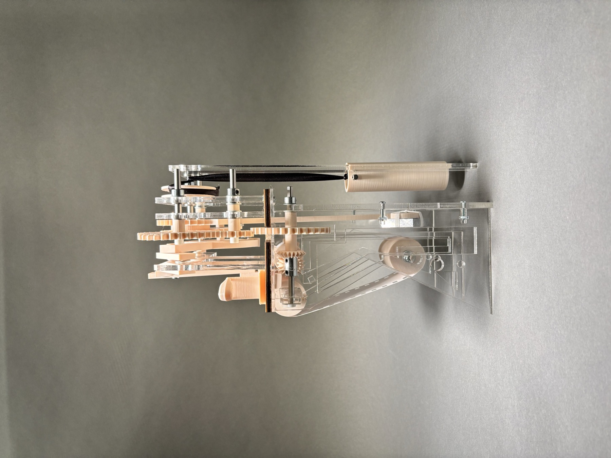
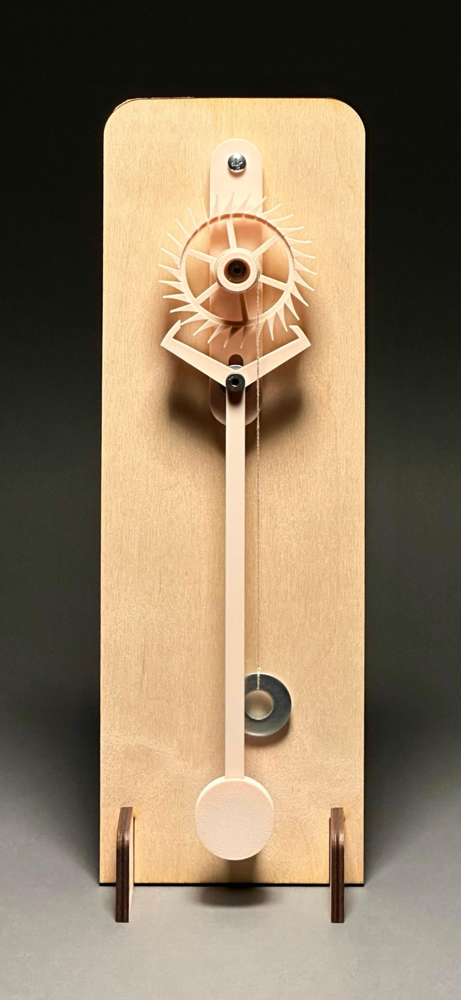
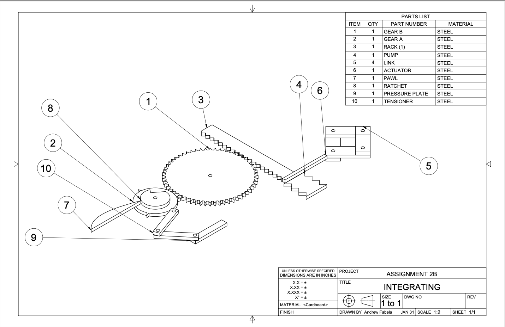
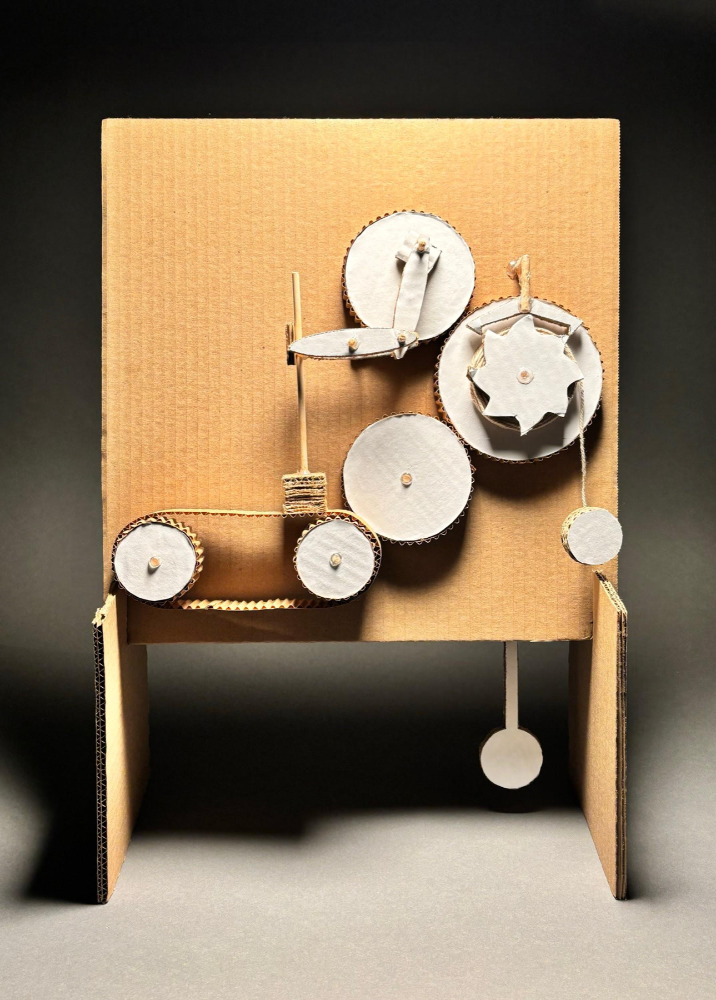
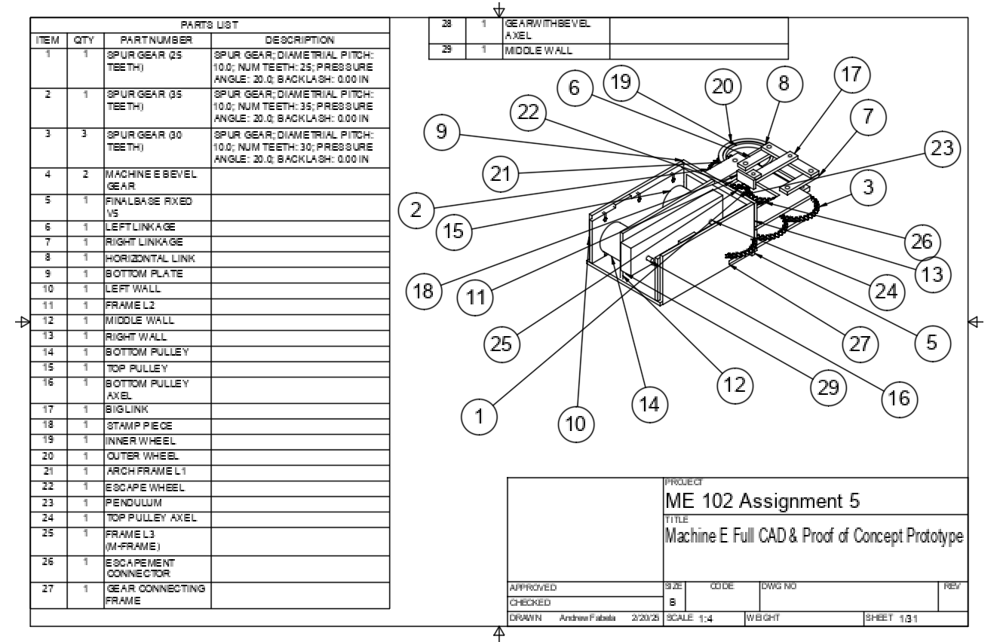
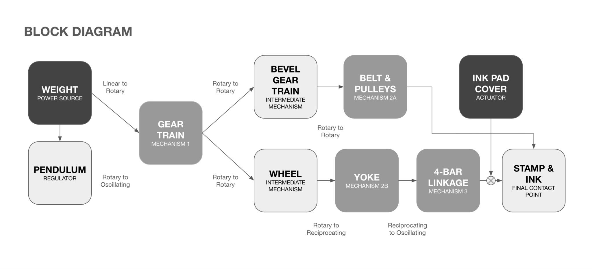
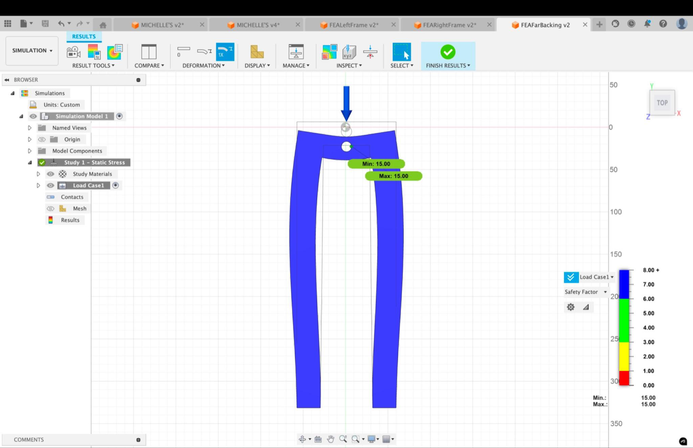
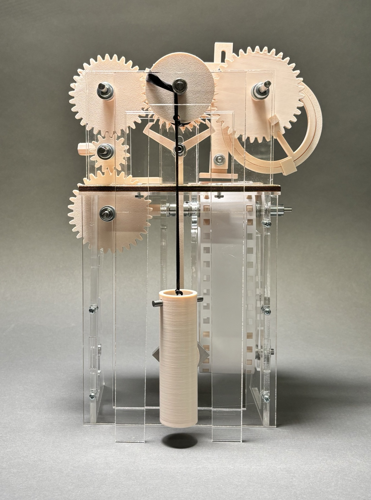
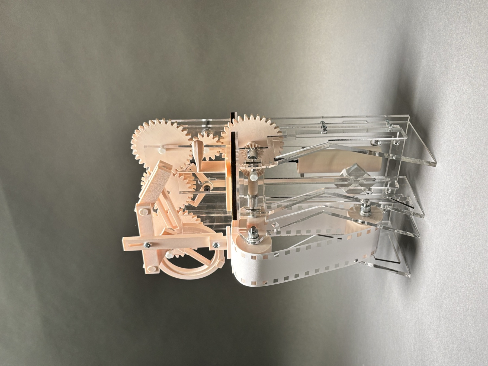
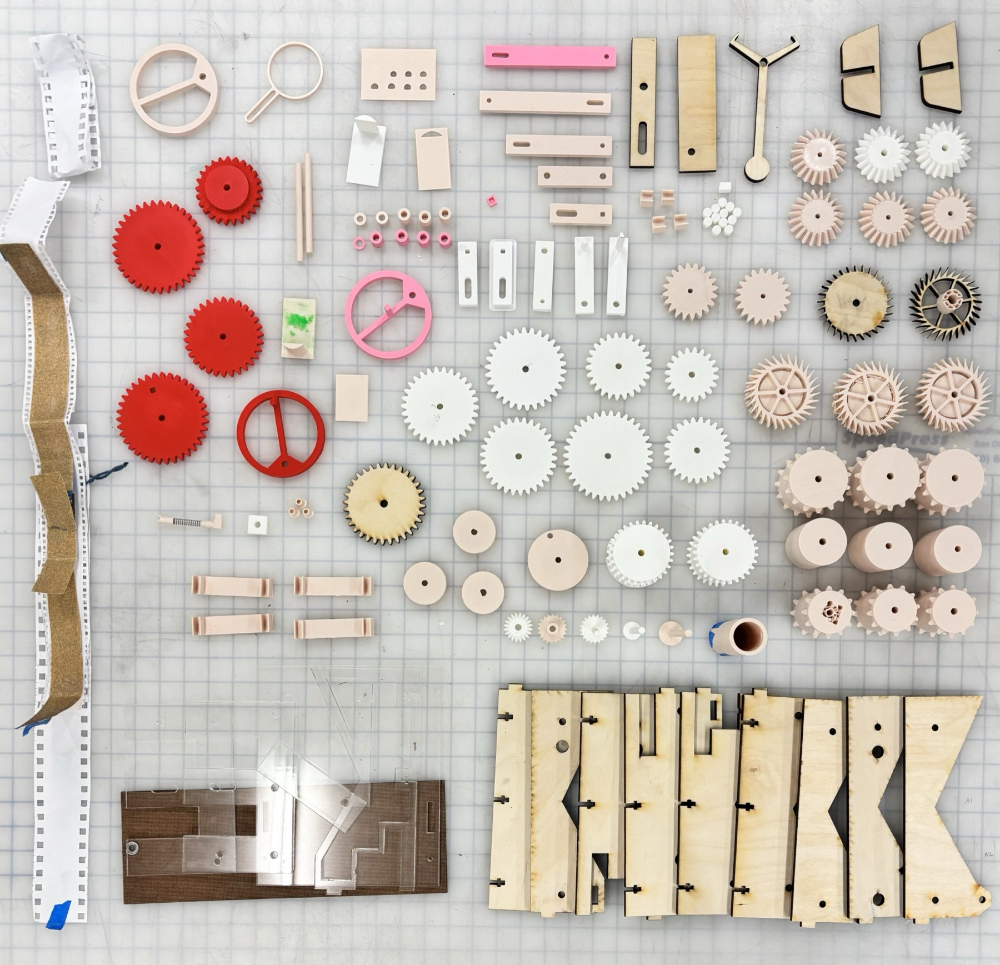

Tik-Tok
A clock with no battery, no motor, no hands — just a falling weight stamping time onto paper.



Tik-Tok is a fully functional timepiece driven entirely by the gravitational potential energy of a weight. As the weight falls, it drives the gear train; a stamp mounted on a vertical linkage rocks back and forth between an ink pad and a moving paper belt — stamping the paper at a steady interval and printing a physical record of the passage of time.
Built with a five-person team across a full quarter of Stanford's ME 102 — sketched, prototyped in cardboard, proven as a critical mechanism, CADed part by part, stress-tested with FEA, and fabricated in 3D print and laser-cut acrylic.
Concept & cardboard
The design began with a real clock escapement mechanism and evolved through MEDGI iteration — mapping the mechanism, educing its problems, disrupting with generative questions, gestalting the fixes, and integrating a buildable design. The first physical proof was a planar cardboard model: linear motion of the weight into rotary motion of the pulleys, and back into linear motion of the stamp through the linkages.


The critical mechanism
Everything depends on the escapement: the weight's linear pull becomes intermittent rotation of the escape wheel, metered tooth by tooth by a pendulum swinging the pallet fork. Get this wrong and the machine free-falls or stalls.
The team built it standalone first — and iterated: more teeth on the escape wheel, longer teeth, the pallet fork shifted below the wheel, and the pendulum fused directly to the pallet fork so it stopped behaving like a cantilever. Stable ticking before anything else got built.
Full CAD
Twenty-nine parts, each drawn and dimensioned: spur gears, bevel gears, pulleys, the wheel-and-yoke, and the 4-bar linkage that converts rotation into the stamp's rocking motion. One energy source flows two ways — up through the bevel gears to drive the paper belt, and out through the yoke and linkage to swing the stamp between ink pad and paper.


Engineering it lighter
Beyond making it work, the team made it efficient: formal FEA on every frame piece to see how forces actually propagated, then redesigned each one — cutting material from low-stress mid-sections while reinforcing every connection point. Free-body diagrams and calculations for each subsystem — weight, escapement, gear train, bevel gears, pulleys, wheel-yoke, and 4-bar linkage — tracked the forces from power source to stamp.

The machine
Every gear, spool, and linkage arm 3D-printed; the frame laser-cut from clear acrylic and joined with standoffs and bearings. Running on stored gravity alone is unforgiving — too much friction anywhere and it stalls — so the team iterated on gear meshes, belt tension, and weight sizing until it ticked reliably from top to bottom of the weight's travel.


